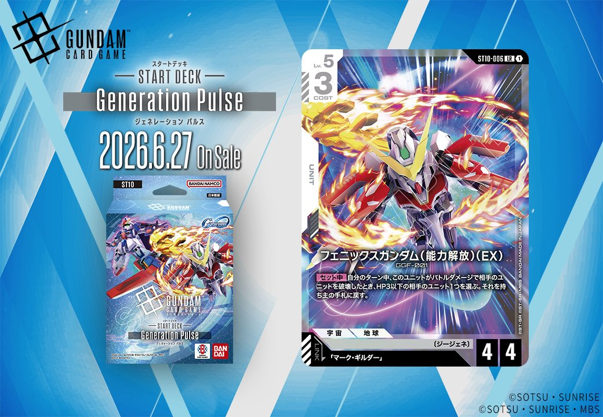
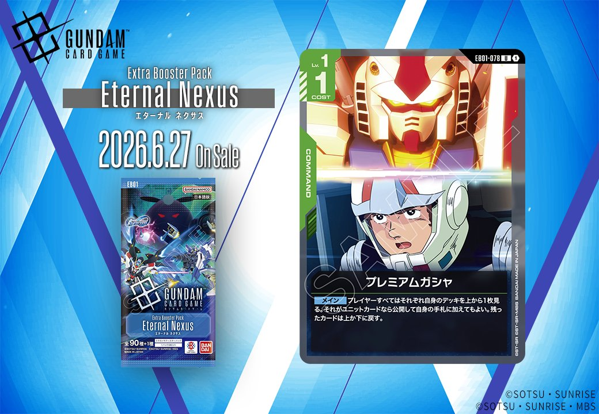
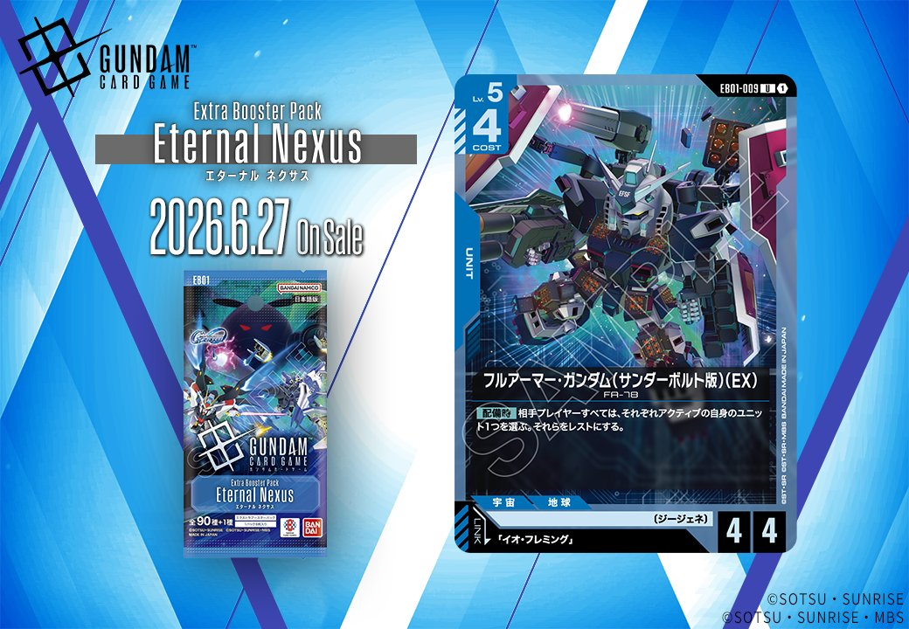
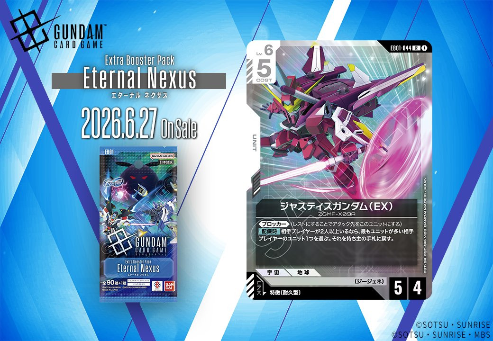

今回は、ST10「Generation Pulse」から2枚、EB01「Eternal Nexus」から4枚の計6枚の新カードが公開されました。特に注目すべきは、同日公開されたUNITとPILOTがリンク条件で結ばれた2つの組合せ——ST10収録の「フェニックスガンダム (能力解放) (EX)」と「マーク・ギルダー」、EB01収録の「フルアーマー・ガンダム(サンダーボルト版)(EX)」と「イオ・フレミング」——が含まれている点です。さらに緑のCOMMAND「プレミアムガシャ」と、PILOTをリンク条件とする赤のUNIT「ジャスティスガンダム(EX)」も収録されており、各色の戦術の幅を広げる構成となっています。

マーク・ギルダー (ST10-012)
| 色 | 白 | タイプ | PILOT |
| Lv | 4 | コスト | 1 |
| 補正 AP | 2 | 補正 HP | 1 |
| 特徴 | 〔ジージェネ〕、〔支援型〕 | ||
効果: 【バースト】このカードを手札に加える。【セット時】Lv.5以下の相手のユニット1つを選ぶ。このターン中、それをAP-2する。
マーク・ギルダーは【セット時】にLv.5以下の相手ユニットのAPを-2する白色のサポート向けパイロット。コスト1と軽く、バースト効果で手札に加えられるため使い勝手が良い。同日公開のフェニックスガンダム(能力解放)とリンクでき、AP減少で弱体化させたユニットをフェニックスの戦闘で破壊しやすくする連携が期待できる。

フェニックスガンダム (能力解放) (EX) (ST10-006)
| 色 | 白 | タイプ | UNIT |
| Lv | 5 | コスト | 3 |
| AP | 4 | HP | 4 |
| 特徴 | 〔ジージェネ〕 | ||
| リンク条件 | 「マーク・ギルダー」 | ||
効果: 【セット中】自分のターン中、このユニットがバトルダメージで相手のユニットを破壊したとき、HP3以下の相手のユニット1つを選ぶ。それを持ち主の手札に戻す。
フェニックスガンダム (能力解放) (EX)はバトルダメージで相手ユニットを破壊した際、HP3以下の相手ユニットを手札に戻すという追加除去能力を持つLv.5ユニット。マーク・ギルダーとのリンクによりAP6相当で攻撃できるため、相手の中堅ユニットを破壊しつつ小型ユニットも処理する2体除去が狙える。 白の定番カードであるエールストライクガンダムと組み合わせることで、相手の盤面を効率的にコントロールする戦術が期待できる。

プレミアムガシャ (EB01-078)
| 色 | 緑 | タイプ | COMMAND |
| Lv | 1 | コスト | 1 |
効果: メインプレイヤーすべてはそれぞれ自身のデッキを上から1枚見る。それがユニットカードなら公開して自身の手札に加えてもよい。残ったカードは上か下に戻す。
プレミアムガシャは、全プレイヤーがデッキトップを確認してユニットカードなら手札に加えられる緑1コストのコマンドカード。自分だけでなく相手にも恩恵があるため、序盤の手札事故回避や多人数戦での政治的な駆け引きに使える変則的なドローソース。 相手にもアドバンテージを与えてしまうリスクはあるが、コスト1で手軽に使えるため、緑単色デッキの序盤の動きを支える選択肢になりそう。

フルアーマー・ガンダム(サンダーボルト版)(EX) (EB01-009)
| 色 | 青 | タイプ | UNIT |
| Lv | 5 | コスト | 4 |
| AP | 4 | HP | 4 |
| 特徴 | 〔ジージェネ〕 | ||
| リンク条件 | 「イオ・フレミング」 | ||
効果: 【配備時】相手プレイヤーすべては、それぞれアクティブの自身のユニット1つを選ぶ。それらをレストにする。
フルアーマー・ガンダム(サンダーボルト版)(EX)は、配備時に相手プレイヤー全員のアクティブユニットを1体ずつレストにする強力な妨害効果を持つ青のLv.5ユニット。コスト4でAP4/HP4と標準的なステータスながら、多人数戦では複数の相手ユニットを同時にレストできる点が魅力的。リンク先の「イオ・フレミング」は、レストユニットが2体以上いる状況で《リペア2》を得るため、このユニットの配備時効果で作った盤面を活かしやすい設計となっている。

イオ・フレミング (EB01-063)
| 色 | 白 | タイプ | PILOT |
| Lv | 4 | コスト | 1 |
| 補正 AP | 2 | 補正 HP | 1 |
| 特徴 | 〔ジージェネ〕、〔耐久型〕 | ||
効果: 【バースト】このカードを手札に加える。このユニット以外の、レストのユニットが2つ以上いるなら、これは《リペア2》を得る。(自分のターン終了時、このユニットを指定の数回復する)
イオ・フレミングは【バースト】で手札に回収でき、レストユニットが2つ以上いれば《リペア2》を得る条件付きパイロットです。同日公開のフルアーマー・ガンダム(サンダーボルト版)(EX)は【配備時】に相手ユニットをレストにできるため、この条件を満たしやすくなります。COST1と軽量で、リンク後は毎ターン終了時に2回復できるため、白の防御的な戦略に適したカードと言えるでしょう。

ジャスティスガンダム(EX) (EB01-044)
| 色 | 赤 | タイプ | UNIT |
| Lv | 6 | コスト | 5 |
| AP | 5 | HP | 4 |
| 特徴 | 〔耐久型〕 | ||
| リンク条件 | (PILOT) | ||
効果: 《ブロッカー》(レストにすることでアタック先をこのユニットにする)【配備時】相手プレイヤーが2人以上いるなら、最もユニットが多い相手プレイヤーのユニット1つを選ぶ。それを持ち主の手札に戻す。
ジャスティスガンダム(EX)は、コスト5で《ブロッカー》を持つ赤色の防御的ユニット。配備時効果は多人数戦フォーマット専用で、相手プレイヤーが2人以上いる場合にのみ発動し、最もユニットが多い相手のユニット1つを手札に戻す除去効果を持つ。 通常戦では配備時効果が機能しないためAP5/HP4の《ブロッカー》としての運用に留まるが、チーム戦やバトルロワイヤルでは盤面優位な相手への牽制役として活躍できる。パイロットリンクにも対応しており、多人数戦での防御と妨害を両立する特殊なポジションのカードだ。
関連カード
-
 溢れる慈愛(GD01-118)白系デッキ内採用率39.6% (1260デッキ)
溢れる慈愛(GD01-118)白系デッキ内採用率39.6% (1260デッキ) -
 ガンダム・ルブリス(GD01-086)白系デッキ内採用率37.3% (1186デッキ)
ガンダム・ルブリス(GD01-086)白系デッキ内採用率37.3% (1186デッキ) -
 エールストライクガンダム(ST04-001)白系デッキ内採用率35.7% (1136デッキ)
エールストライクガンダム(ST04-001)白系デッキ内採用率35.7% (1136デッキ) -
 キラ・ヤマト(ST04-010)白系デッキ内採用率35.3% (1123デッキ)
キラ・ヤマト(ST04-010)白系デッキ内採用率35.3% (1123デッキ) -
 リック・ディアス(GD02-079)白系デッキ内採用率29.1% (925デッキ)
リック・ディアス(GD02-079)白系デッキ内採用率29.1% (925デッキ) -
マーク・ギルダー(ST10-012)白系デッキ内採用率0% (0デッキ)
-
 ウイングガンダムゼロ(GD01-024)緑系デッキ内採用率16.3% (520デッキ)
ウイングガンダムゼロ(GD01-024)緑系デッキ内採用率16.3% (520デッキ) -
 ウイングガンダム(ST02-001)緑系デッキ内採用率15.6% (497デッキ)
ウイングガンダム(ST02-001)緑系デッキ内採用率15.6% (497デッキ) -
 ヒイロ・ユイ(ST02-010)緑系デッキ内採用率15.6% (495デッキ)
ヒイロ・ユイ(ST02-010)緑系デッキ内採用率15.6% (495デッキ) -
 ピースミリオン(GD03-125)緑系デッキ内採用率15% (477デッキ)
ピースミリオン(GD03-125)緑系デッキ内採用率15% (477デッキ)
出典:
- https://x.com/GUNDAM_GCG_JP/status/2052983382666350634
- https://x.com/GUNDAM_GCG_JP/status/2052982960295743753
- https://x.com/GUNDAM_GCG_JP/status/2052982716619247843
- https://x.com/GUNDAM_GCG_JP/status/2052982161708577229
- https://x.com/GUNDAM_GCG_JP/status/2052982418953716007
- https://x.com/GUNDAM_GCG_JP/status/2052982544199811113